Ultra-Scalable Graph-Based Nearest Neighbor Indexing with PiPNN
University of Maryland, College Park
Papers Discussed
Roadmap
- Background — Approximate Nearest Neighbor Problem, k-NN, ANN indexes.
- PiPNN — search-free ANNs construction KDD 2026
- Motivation — the build-time search bottleneck
- Method — overlapping partitions + HashPrune
- Results — matched quality, much faster builds
- Ablation — overlap and partitioning choices
- PiPNN II — quantized, fused CPU kernels for the new bottleneck.
- GPiPNN — the same construction, mapped onto an H100.
- Direct k-NN graphs — the payoff beyond ANN indexes.
Part I Background: nearest-neighbor search
The k-nearest-neighbor problem
Definition — k-NN Given n points \mathcal{X} \subset \mathbb{R}^d, a dissimilarity D(\cdot,\cdot), and a query q \in \mathbb{R}^d, return \mathcal{K} \subseteq \mathcal{X}, |\mathcal{K}| = k, such that \max_{p \in \mathcal{K}} D(q,p) \;\le\; \min_{p \in \mathcal{X} \setminus \mathcal{K}} D(q,p).
Where it shows up:
- Semantic search and RAG — retrieve by embedding similarity.
- Recommendation — nearest items/users in embedding space.
- Entity resolution and deduplication — near-duplicate detection at scale.
- As a primitive — accelerated k-means, hierarchical and single-linkage clustering, k-NN graph construction, spanners and MSTs.
Exact search doesn’t scale — so we approximate
- Brute force takes too long — linear scan is O(n) but n is large!
- Spatial data structures (k-d trees and relatives) give exact k-NN in O(\log n) — but are exponential in d; at embedding dimensionality, exact search degenerates back toward brute force.
- ANNS: return an approximate set \mathcal{K}', scored by recall \frac{|\mathcal{K} \cap \mathcal{K}'|}{|\mathcal{K}|}.
- An index buys query throughput with preprocessing: build once, query fast.
- ANN methods are judged on recall vs. throughput (queries per second).
Recall ≥ 0.9, highest QPS possible
ANN Methods
ann methods IVF: cluster, then scan
Partition the points into cells around cluster centers; a query probes its nearest cells and exhaustively scans every point inside them.
- Simple
- Fast to build — one k-means-style pass.
- Fast to score — in-cell scans are contiguous, SIMD-friendly.
- The catch: dimensionality — high recall needs many probes per query.
ann methods Locality Sensitive Hashing (LSH)
Locality-sensitive hashing Any hash family whose collision probability falls with distance: \Pr[\,\mathrm{hash}(x) = \mathrm{hash}(y)\,] \;=\; f\big(\mathrm{dist}(x,y)\big).
ann methods Search Graphs
Points are vertices; edges connect near (and navigationally useful) points; a query enters at a fixed source and walks the graph greedily toward its target.
Graph indexes deliver state-of-the-art query performance at high recall.
Beam search
BeamSearch(G, q, source s, beam width L):
B ← {s} ▸ beam: best L points seen
V ← ∅ ▸ visited
while B ∖ V ≠ ∅:
p ← argminu ∈ B∖V D(u, q)
B ← B ∪ Neighbors(p) ▸ score every neighbor vs. q
V ← V ∪ {p}
if |B| > L: B ← closest L points to q in B
return B
Irregular accesses lead to poor cache performance.
Goal: minimize the number of distance computations performed
The first graph to try: the k-NN graph
Connect each point to its k nearest neighbors.
Problems:
- no long range edges
- lack of directional diversity
Built directly — no search — by NN-Descent: iterate on neighbors of neighbors.
a little theory What should the graph keep?
Every candidate edge costs degree budget. Keep edges that are near and that cover every direction: near-parallel edges are redundant, while a spread of directions routes any query home.
a little theory The RNG condition
Domination A candidate c is dominated given kept neighbors N(p) if \exists\, b \in N(p): \quad D(p,b) \;<\; D(p,c) \;\;\text{and}\;\; D(b,c) \;<\; D(p,c) — a kept neighbor nearer to p is also closer to c than p is: points nearer to p prune those farther away. The RNG rule keeps only the undominated edges (Arya & Mount ’93).
a little theory RobustPrune: the \alpha relaxation
RobustPrune(p, C, α) Sort C by D(p,\cdot). Repeat until |N(p)| = R or C is empty: move the nearest remaining y into N(p), then delete every remaining z with \alpha \cdot D(y,z) \;<\; D(p,z), \qquad \alpha \ge 1. Introduced in DiskANN (Subramanya et al., NeurIPS ’19).
- \alpha = 1 is exactly the RNG condition; larger \alpha prunes less, keeping longer detour-cutting edges.
- Note what it needs: the complete candidate set, globally sorted, before any decision.
prior methods Modern Way of Building Graph Indices
For each point:
- Candidate generation — search the partial index.
- Prune — choose directionally diverse edges.
Vamana (DiskANN) · HNSW · NSG — all instances of this recipe.
prior methods Vamana (DiskANN)
- Start from an empty graph (or a random bounded-degree one).
- For each point p: beam-search the current partial graph — the visited set becomes p’s candidate list.
- RobustPrune the candidates into a sparse, diverse adjacency list; insert reverse edges (re-prune when over budget).
Queries use the same beam search over the finished graph.
Properties of Graph Indices
Pros
- Very good QPS-vs-recall trade-off
- Works with many notions of distance — L2, cosine, inner product, …
Cons
- Slow to build
- Hard to distribute search across multiple machines
- Significant space overhead
- No theoretical guarantees for the methods used in practice
PiPNN works to speed up the build.
Why build time matters
- Indexes are rebuilt periodically — data drifts, embeddings get retrained.
- New datasets mean parameter tuning — and every trial is a full build.
- Scalability issues for billion scale.
- ANNS is a subroutine — accelerated k-means, hierarchical clustering, approximate k-NN graphs, spanners, MSTs, single-linkage clustering all sit on top of it.
Part II PiPNN: search-free construction
PiPNN: Ultra-Scalable Graph-Based Nearest Neighbor Indexing — KDD 2026
The search bottleneck
- Build time dominated by search
- Good candidate generation
- Fails to leverage that the problem is offline
Partition instead of search
- Cluster the data; take candidates from co-members.
- Curse of dimensionality: boundaries split neighbors → clusters must overlap and stay large → long candidate lists.
- Long lists are slow to prune.
Needed: an online prune that handles candidate streams in bounded memory.
HashPrune: an online pruning reservoir
Per source point p: hash each candidate’s residual direction c - p — Part I’s LSH cones, pointed at the source. On a bucket collision, keep the nearer; when full, evict the farthest.
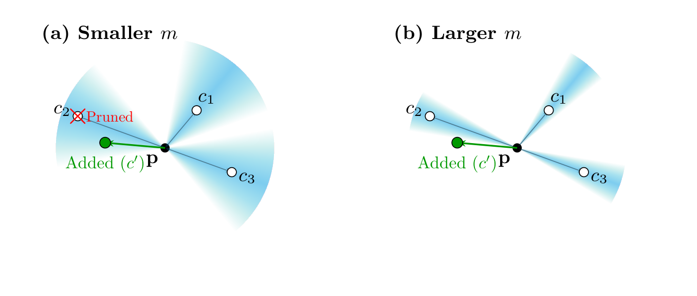
HashPrune is history-independent
Theorem For a fixed hash function h_p, candidate set C, and reservoir size \ell, the final adjacency list produced by HashPrune is unique — independent of the insertion order of candidates in C.
Proof sketch (i) The collision rule means bucket b ends up holding the D(p,\cdot)-minimum among candidates hashing to b. (ii) The eviction rule always removes the farthest, so the reservoir ends as the \ell nearest bucket winners. Both sets are determined by (h_p, C, \ell) alone — order appears nowhere. \square Full proof: paper’s full version (arXiv).
This allows us to efficiently prune candidates coming from clusters.
PiPNN, end to end
PiPNN(X, params): G ← (X, ∅) B ← Partition(X) ▸ overlapping leaves for leaf b ∈ B in parallel: Eb ← Pick(b) ▸ dense in-leaf k-NN candidates G.PruneAndAddEdges(Eb) ▸ per-point HashPrune if params.final_prune: for x ∈ X in parallel: RobustPrune(x) return G
No step searches the partial graph.

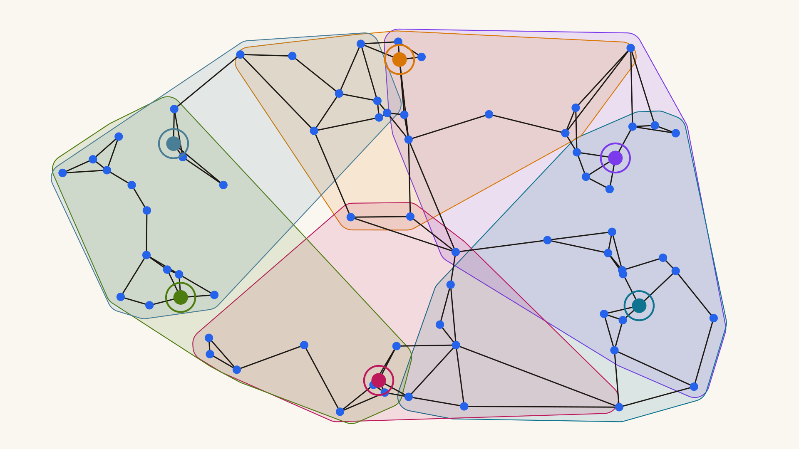
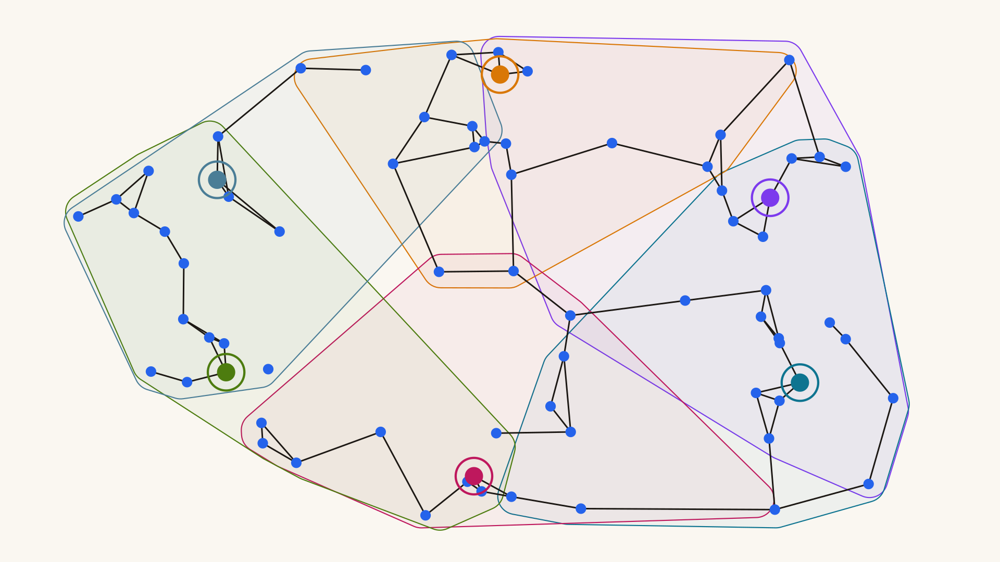
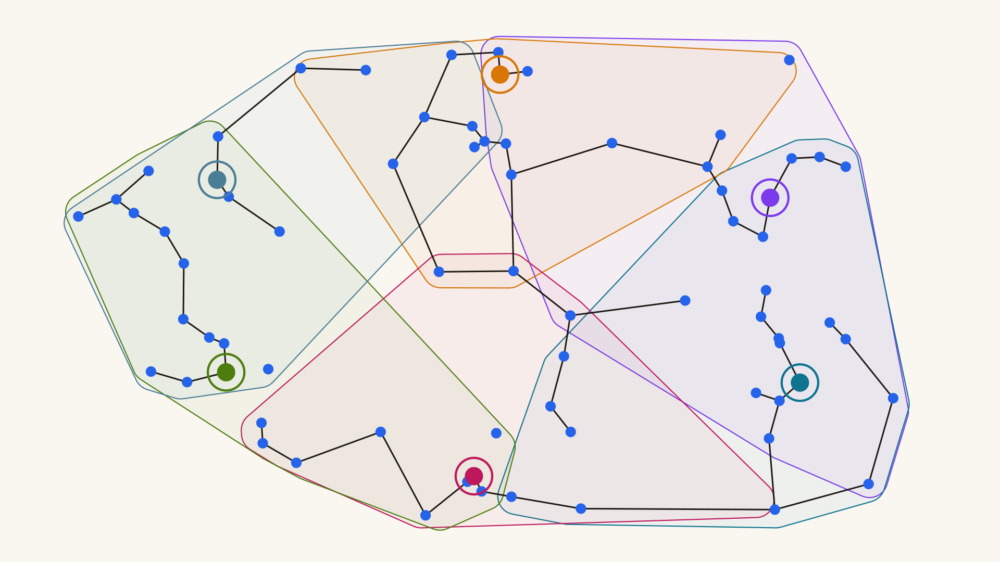
Partitioning: overlapping leaves by ball carving
- Non-overlapping partitioning — sample a random subset of points as partition leaders (stars); assign every point to its closest leader: Voronoi-like cells.
- Hierarchical recursion — any cell larger than C_{\max} (typically 1024–2048) recurses to subdivide.
- Overlap / fanout — assign each point to its top-f closest leaders, so close neighbors are not split across a cell boundary; f follows a per-depth schedule (multi-level fanout, e.g. 10 at the top, 3 below).
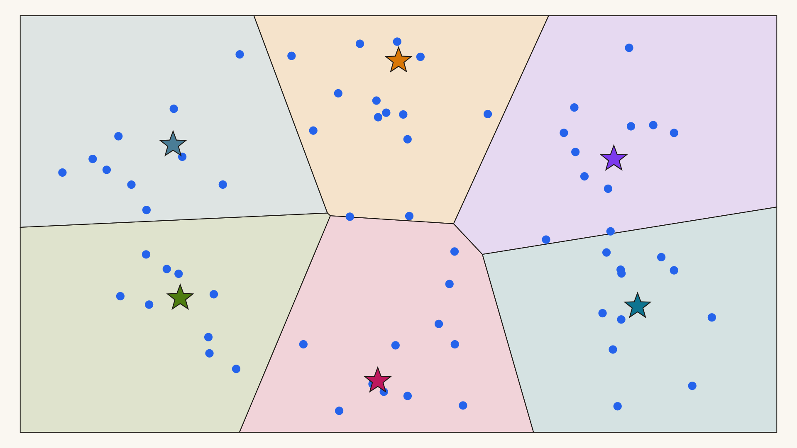
Picking from Leaves
- Inside a leaf, compare everything to everything.
- Each point keeps its two nearest co-members; edges are symmetrized.
- Two per leaf is enough.
Hardware-efficient by construction: all-pairs scoring is a GEMM.
Stream candidate edges into HashPrune
- Every leaf’s 2-NN edges stream into per-point reservoirs.
- Collisions keep the nearer; capacity evicts the farthest.
- HashPrune ensures determinism: schedule doesn’t matter.
And a final prune, for extra sparsity
We found:
- ~10% QPS increase at recall ≥ 0.9
- Around ~10% of running time
Part III Experiments
Machine 4× Intel Xeon Platinum 8160 — 192 cores, 1.5 TB DRAM · billion-scale: GCP c4-highmem-288 — 288 vCPUs, 2.2 TB
Datasets BigANN 1B·128d · DEEP 1B·96d · MS-SPACEV 1B·100d · MS-Turing 1B·100d · Wikipedia-Cohere 35M·768d · OpenAI-ArXiv 2M·1536d
Baselines Vamana (ParlayANN) · HNSW · HCNNG (ParlayANN) · MIRAGE · FastKCNA
Headline: same quality, an order of magnitude faster
Up to 11.6× faster than Vamana and 12.9× faster than HNSW at state-of-the-art index quality (average speedups 6.32× and 10.4×).
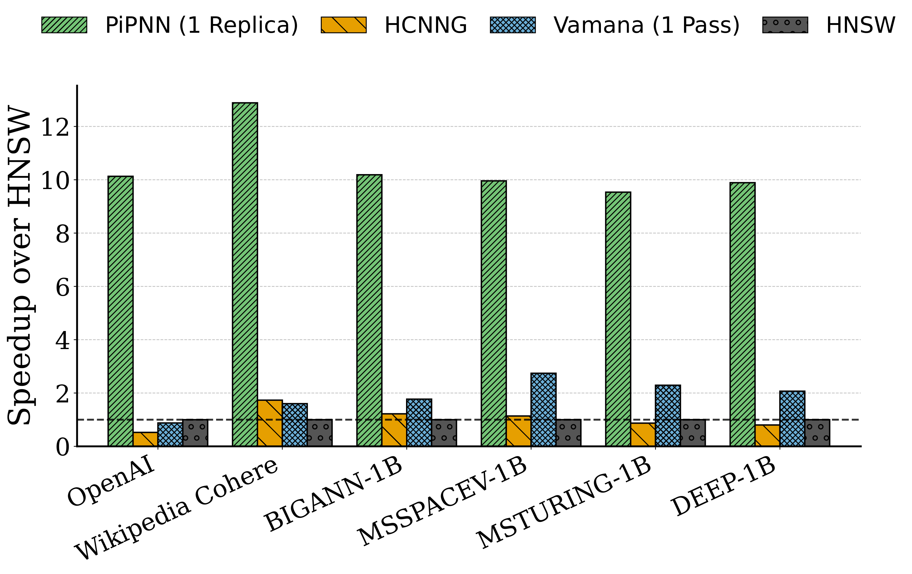
Query quality holds — billion-scale datasets


QPS-vs-recall against the search-built baselines — build times in the legend.
Query quality holds — high-dimensional embeddings
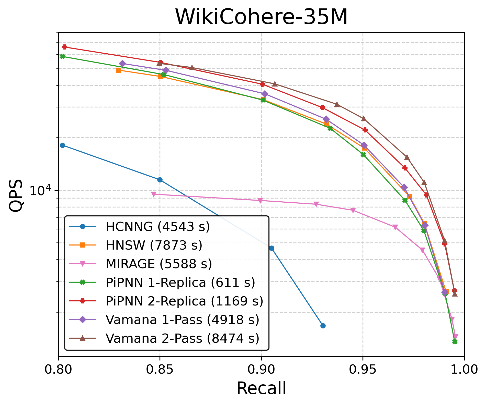

Wikipedia-Cohere at 768d, OpenAI-ArXiv at 1536d — same picture.
PiPNN builds k-NN graphs faster
The fast build pays off downstream — k-NN graphs by build-index-then-query-all: 2.2–6.9× faster than HNSW, 1.4–1.7× than Vamana end to end.

Ablation: multi-level fanout beats replication


Multi-level fanout builds 1.35–2.5× faster than replication at the same quality.
Ablation: dense ball carving works the best
Partitioning strategies compared, rest of the pipeline fixed — dense (k-)ball carving wins:

Ablation: picking from the leaves

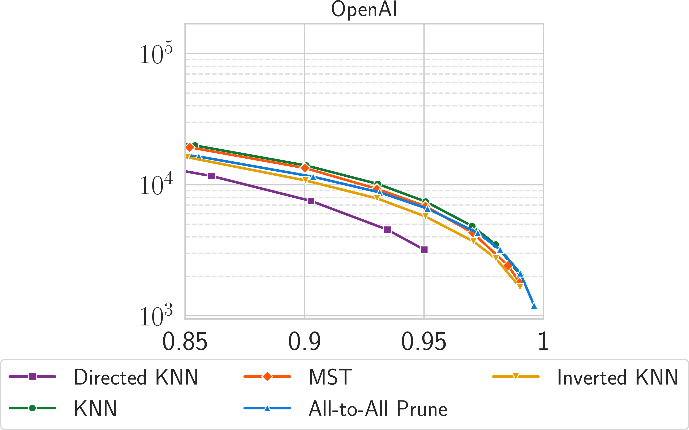
Bi-directed k-NN and MST both work.
Ablation: k-NN degree in the leaves
Denser k-NN graph in the leaves → denser PiPNN index. Sweet spot for quality is between 2 and 4.
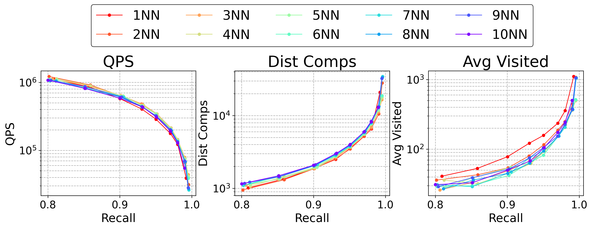
Part IV PiPNN II (under review)
Where the time goes now
With search gone, construction time is batched distance comparison + top-k inside leaves — and the first PiPNN did that with fp32 GEMM and a materialized distance matrix.
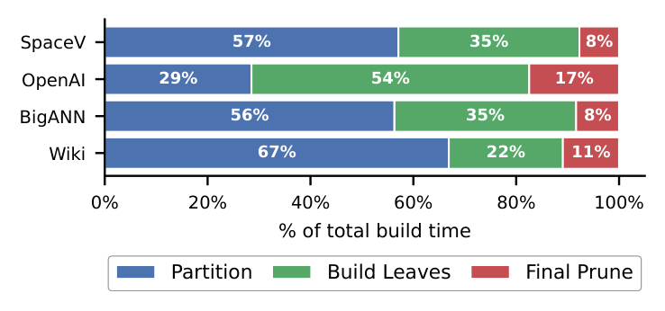
The leaf kernel implementation matters
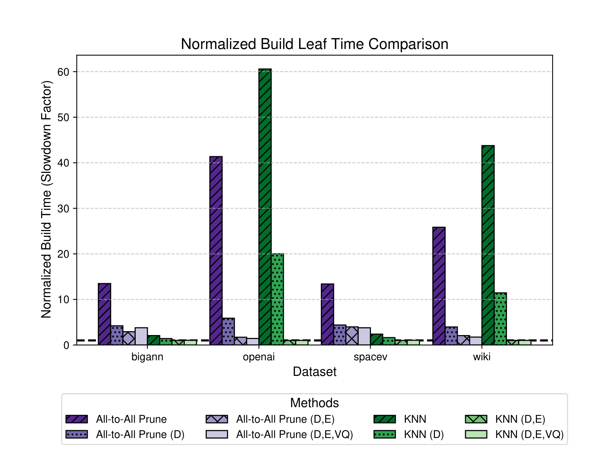
Implementation of top-k kernels has highest impact on running time
What about Quantization?
quantization Our Quantization methods
- First, a random rotation — no coordinate is special afterwards.
- RSQ8 — round each rotated coordinate to one byte.
- TQ4 (TurboQuant) — 4 bits per coordinate, Lloyd–Max codebook; decode is one
vpshufb.
Both fit one template: distance = integer inner product + small correction.
hardware vpdpbusd instruction
AVX-512 VNNI’s quad dot product: each of the 16 lanes of a 512-bit register multiplies 4 unsigned bytes by 4 signed bytes and adds into a 32-bit accumulator — 64 multiply-accumulates per instruction.
The catch: one operand is unsigned — database codes are stored shifted by +128, and the bias (128 · Σq) is subtracted from the accumulator afterwards.
Result of Optimizations
The fused, quantized leaf-2-NN kernel takes leaf scoring from 12.90 ms to 1.04 ms — 12.4×.

CPU results: 4–8× over quantized Vamana
Builds are 4–8× faster than quantized Vamana (geomean 5.9×) and 40.7× faster than unquantized Vamana; up to 8× over the original PiPNN recipe.

CPU build times, per dataset

Part V GPiPNN
The same search-free construction, mapped onto a single H100.
hardware Relevant H100 Background
- WGMMA — a warpgroup (128 threads) collectively issues one tensor-core matrix multiply: a 64 × 128 tile, advanced 32 contraction-bytes per step, int8 × int8 → int32 — the GPU sibling of
vpdpbusd. - TMA — the tensor memory accelerator copies whole tiles between HBM and shared memory from a descriptor (base, shape, stride, swizzle).
Goal: overlap computation and memory movement — keep the tensor cores busy.
Modifying PiPNN for GPU
- Recursive partitioning — recursion is a poor GPU fit: a dynamic tree of dependent launches instead of flat bulk passes.
- Skewed bucket sizes — a launch finishes when its slowest block does: oversized buckets stall the grid while near-empty leaves idle SMs.
- Lock-based HashPrune — thousands of concurrent inserts contending on per-point reservoirs serialize on locks.
Fixes: flatten into sorted rounds · regularize bucket sizes · one segmented fused top-k · sort-and-merge HashPrune.
GPU build times, per dataset
Up to 43.7× faster than Jasper and 50× faster than CAGRA; geomean 13.3× / 27× with RSQ8, 8.1× / 16.3× unquantized.
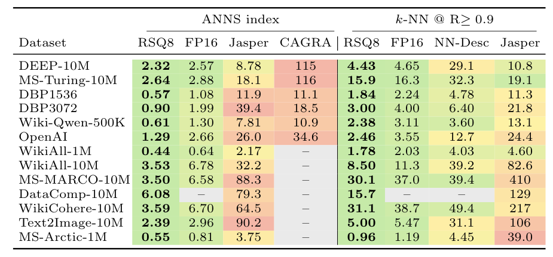
Part VI Direct KNN builds with PiPNN
Direct KNN Building
Eliminate prunes → PiPNN builds high-quality k-NN graphs.
Direct mode results
At recall ≥ 0.9 for 10-NN graphs: up to 13× faster than prior best CPU methods — 4–10× over PyNNDescent, 5–20× over Vamana (geomeans 5.9× / 10.3×) — and a billion-scale 10-NN graph in under 16 minutes.

Part VII Wrap-up
Summary
- PiPNN removes build-time graph search: overlapping leaves, dense local comparisons, HashPrune’s order-independent online pruning.
- Quality matches prior indexes at up to 11.6× / 12.9× faster builds.
- PiPNN II fuses quantized scoring with top-k on CPU: 4–8× over quantized Vamana.
- GPiPNN maps the same construction onto GPUs: fastest on every measured dataset.
- Directly builds billion-scale 10-NN graphs in ~15 minutes.

Limitations and future work
- No streaming builds (yet)
- No dynamic insert / delete (yet)
- GPU implementation is single-node, shaped by H100 constraints
- Future: distributed builds · TPUs · dynamic updates · vector-database integration
Thank you — questions?
Backup: QPS-recall, MS-SPACEV and MS-Turing

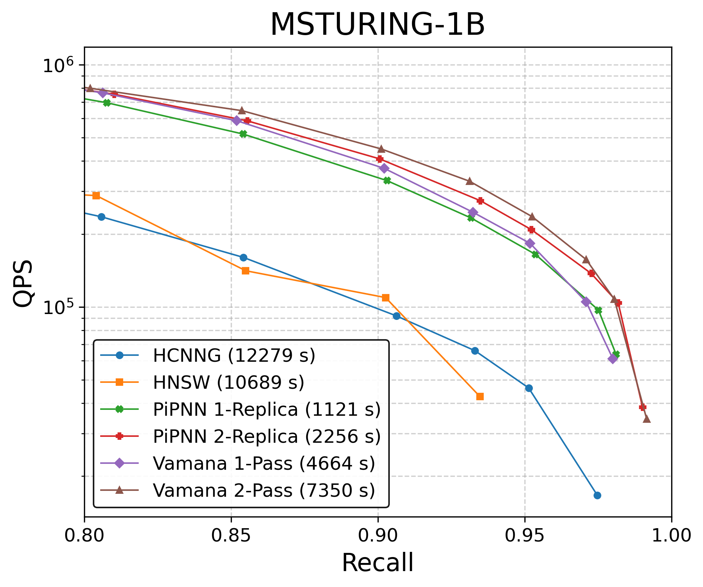
Backup: which partitioning method?
QPS-vs-recall by partitioning strategy — randomized (k-)ball carving leads across datasets:

Backup: Partition pseudocode
Partition(S, depth):
if |S| ≤ Cmax: emit leaf S; return
L ← sample leaders from S u.a.r. ▸ ≈1000 at the top
score S × L ▸ one blocked dense GEMM
assign each p ∈ S to its f nearest leaders ▸ f = fanout[depth]
merge undersized clusters (< Cmin) into siblings
for cluster C in parallel: Partition(C, depth+1)
- Recursion runs 2–3 levels in practice; leaves cap at C_{\max}, typically 1024–2048.
Backup: HashPrune parameter tuning
Default m = 12 hyperplanes; the paper tested b \in \{6, 8, 10, 12, 14, 16\} and only b = 6 degraded performance — bucket resolution (directional diversity) trades against collision rate.
Backup: panel-based RobustPrune
The final-prune pass can also run over quantized byte panels; pruning-method comparison:

Backup: fuse quantized scoring and top-k
Decode codes into panels of 16 points, four dimensions at a time; broadcast each query’s matching quad; one vpdpbusd scores a whole panel per step — and the loop order lets every finished dot product fall straight into top-k state, in registers. The distance matrix is never written and re-read.
Backup: AssignLeaders — top-f against a small leader set
- Partitioning’s kernel is asymmetric: every point scores against a small leader set — so pretranspose the leaders once and stream cache-sized chunks of points through.
- The fanout schedule sets k: top-10 at the root, top-3 below, top-1 deeper.
- Top-1 is an in-register argmin sweep. Top-3 / top-10 use displacement sort: each SIMD lane tracks its own top-k in k registers, and the horizontal merge is deferred to the very end.
- k=3 stays entirely in registers; k=10 spills to L1 — affordable, because only the root scores each point once while lower levels score every replica.
Backup: the leaf kernel — a fused self-join
- Inside a leaf every point is both query and database — so score only the lower triangle: half the distance work.
- Each score updates two top-2 trackers at once: the query row’s (in registers) and the database point’s (loaded once per panel, updated in-register, stored back).
- Lane-parallel top-2 insertion runs in 6 blends; masking retires self-pairs and padding.
- The output is leaf-2NN: each member’s two nearest co-members, symmetrized into the candidate stream HashPrune absorbs.
Backup: GPiPNN — flatten, regularize, segment
Flatten recursion into assignment-and-sort rounds · reshape buckets into fixed-size score tiles · one segmented fused top-k over all leaves · sort-and-merge instead of locks · DirectEdgePrune over already-witnessed edges.
Backup: flatten recursion into sorted rounds
- The recursion tree becomes a fixed number of assign-then-sort rounds: sample leaders, assign every point to its f nearest, radix-sort by leader key — each bucket is now a contiguous run.
- Two rounds suffice (f_0 = 8, then f_1 = 4 — up to 32 leaf memberships per point).
- The price is one device-wide sort per round — bulk, regular work the GPU is happy to do.
Backup: regularize bucket sizes
- After sorting, run-length-encode the bucket sizes, then split the oversized and merge the undersized toward a target of ≈1024 points.
- What it buys: every leaf now fits one fixed tile shape — a single kernel serves all of them, with no per-size specialization and no relaunches.
- The slowest-block problem dissolves: uniform buckets mean no straggler stalls the grid.
Backup: one fused, segmented top-k kernel
- Every leaf is a segment of the same launch — one kernel scores them all.
- Inside: producer warps TMA-stage the next 32-byte stripe into shared memory while WGMMA consumes the current one — the copy hides under the math, one matmul group always in flight.
- Scores drain from accumulators straight into register top-k, merged at the end (butterfly): the score matrix never exists in global memory.
The CPU fusion, at warpgroup scale.
Backup: HashPrune without locks — sort-and-merge
- Thousands of concurrent inserts on per-point reservoirs would serialize on locks — so emit now, resolve later: write two direction-records per candidate edge into a buffer.
- Radix-sort the batch by (owner, distance), then realize every reservoir in one sequential merge sweep.
- The license is Part II’s theorem: HashPrune is order-free, so a sorted batch and a stream of locked inserts land on the same final reservoir.
Backup: DirectEdgePrune — prune only what was witnessed
- One search-shaped pass remains: the final RobustPrune wants candidate-to-candidate distances the build never computed — recomputing them is a scatter-gather pass.
- The fix: prune using already-witnessed distances only. The error is one-sided — it can only miss prunes, never over-prune.
- The trade: graphs come out 30–58% denser at comparable query quality, and GPU build time drops by up to 1.4×.
Backup: GPU query quality, same picture as CPU

Backup: GPU direct k-NN
Geomean speedups: 7.12× over Jasper, 2.91× over NN-Descent, 9.84× over CAGRA, 49.80× over IVF-PQ8.

Backup: full build tables


Backup: evaluation scope (PiPNN II)
Twelve datasets across text, image, and text-to-image modalities; up to one billion points on CPU and one hundred million on GPU.
Backup: beam search is latency-bound pointer chasing
Every hop loads an adjacency list, then gathers each neighbor’s vector from a random address to compute its distance: scattered access, poor pipelining, cache misses.
Backup: two exceptions prove the rule
- NN-Descent — no graph search: start from a random graph and iteratively refine by checking neighbors of neighbors. But the product is a k-NN graph, not a navigable search graph — a different artifact (Part VI returns to it).
- HCNNG — no graph search either: candidates come from overlapping clusters via batched comparisons. But with no online prune, per-cluster edges are unioned: dense, directionally redundant adjacency lists, and query quality falls short of the search-built methods.
Search-free candidate generation exists. What’s missing is a prune that keeps up.
Backup: HNSW in detail
- Layered graph; each point draws a maximum level from a geometric distribution.
- Insert by greedy descent from the top layer to the point’s level.
- On each layer below: a candidate search of the partial layer graph (
efConstruction), then RNG-based selection — the domination rule from the theory interlude — keeps M diverse neighbors; degrees are capped.
Queries descend the layers the same way.
Backup: NSG in detail
- Start from an approximate k-NN graph (itself built by another method).
- For each point: search from a navigating node over that graph to collect candidates.
- Select edges with an RNG-style rule (MRNG); patch connectivity with a spanning tree from the navigator.
No incremental insertion here — NSG refines a prebuilt graph in a single pass — yet candidate generation is still search.
Backup: MIRAGE — better graphs to search
- Improves the quality of the base graph so that the construction searches themselves get more efficient.
- Still suffers the search bottleneck — it is polished, not removed.
- In practice: out of memory at billion scale; below 0.8 recall at 100M; originally evaluated only at million scale.
Backup: FastKCNA — refine first, search less
- “Refinement-before-search”: α-prune an approximate k-NN graph first, so the searches that follow run faster.
- The searches still happen — candidate generation remains graph traversal.
- In PiPNN I’s 100M-scale experiments: on average 18.64× longer builds than PiPNN.
Backup: SymphonyQG — faster queries, same builds
- Fuses RaBitQ-style quantization into the graph layout (NGT-QG lineage): batch SIMD distance estimation (FastScan) during traversal, no re-ranking pass.
- State of the art on the query-time time–accuracy trade-off.
- The price: significant memory overhead from the fused quantization-plus-graph layout.
The pattern across all three: optimize around the search loop — never remove it.
Backup: the v1 leaf kernel (Eigen + Highway)
LeafKNN(leaf b, k): ▸ PiPNN I (v1) leaf kernel
D ← all-pairs distances in b ▸ Eigen symmetric GEMM: P·Pᵀ + norms
for point i ∈ b:
pack (D[i,j], j) into 64-bit keys
k nearest ← VQPartialSort(keys, k) ▸ Highway SIMD
return bi-directed edges Eb
- Per-row top-k by vectorized partial sort — distance and index bit-packed into one 64-bit key, sorted with Google Highway’s
VQPartialSort. - This is exactly the kernel the PiPNN II fused self-join replaces.
Backup: HashPrune, as implemented
Insert(p, candidate c, dist d):
if full and d ≥ farthest: return ▸ early reject
h ← sign sketch of (c − p) ▸ m = 12 bits, precomputed
pos ← binary-search slots by h
if collision at h: keep the nearer of the two
elif not full: shift-insert at pos
else: overwrite the farthest, restore hash order
- One reservoir per point; each slot is 8 bytes: 4-byte id · 2-byte hash · 2-byte bf16 norm.
- Slots stay sorted by hash — insert is a binary search, not a scan.
- Reservoir maintenance is ≤ ~5% of total construction time.
Backup: codebase status
Repo: PipNN. Branch map is provisional — turboquant (quantized CPU), with tgpu / tgpu-merge-turboquant / gpu_dev as GPU branch candidates; confirm before pointing anyone at code.
PiPNN